第十章 I2C
10.1 I2C通信¶
10.1.1 I2C通信简介¶
- I2C（Inter IC Bus）是由Philips公司开发的一种通用数据总线
- 两根通信线：SCL（Serial Clock）、SDA（Serial Data）
- 同步，半双工
- 带数据应答
- 支持总线挂载多设备（一主多从、多主多从）
10.1.2 硬件电路¶
- 所有I2C设备的SCL连在一起，SDA连在一起
- 设备的SCL和SDA均要配置成 开漏输出模式
- SCL和SDA各添加一个 上拉电阻 ，阻值一般为4.7KΩ左右
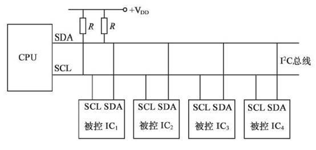
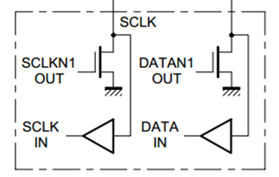
10.1.3 I2C时序基本单元¶
Danger
应该明白，SCL为时钟线，而SDA为数据传输线。
- 起始条件： SCL高电平期间，SDA从高电平切换到低电平
- 终止条件： SCL高电平期间，SDA从低电平切换到高电平
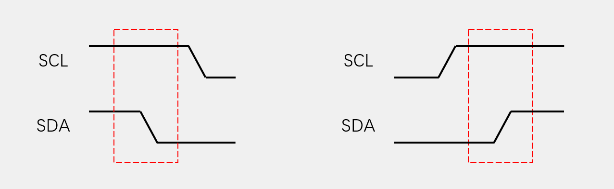
- 发送一个字节
- SCL低电平期间， 主机 将数据位依次放到SDA线上（ 高位先行 ）
- 然后释放SCL， 从机 将在SCL高电平期间读取数据位
- 所以 SCL高电平期间SDA不允许有数据变化 ，依次循环上述过程8次，即可发送一个 字节
再次强调
一个高低电平信号，代表一个二进制位，即一个bit，一个字节位为 8 个bit
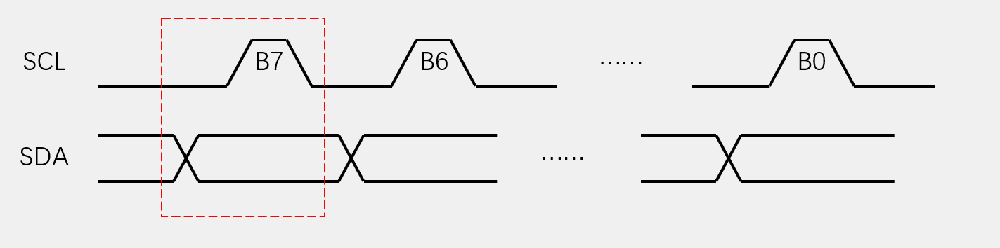
- 接收一个字节
- SCL低电平期间， 从机 将数据位依次放到SDA线上（ 高位先行 ）
- 然后释放SCL， 主机 将在SCL高电平期间读取数据位
- 所以SCL高电平期间SDA不允许有数据变化，依次循环上述过程8次，即可接收一个字节（主机在接收之前，需要释放SDA）
Note
接收和发送主要在于主机和从机，是谁往SDA上放数据和谁从SDA读数据，需要注意的是 主机在接收之前，需要释放SDA ，释放即置高电平。
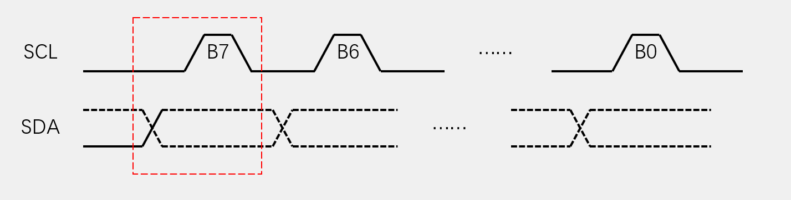
- 发送应答： 主机在接收完一个字节之后，在下一个时钟发送一位数据，数据 0 表示应答，数据 1 表示非应答
- 接收应答： 主机在发送完一个字节之后，在下一个时钟接收一位数据，判断从机是否应答，数据 0 表示应答，数据 1 表示非应答（主机在接收之前，需要释放SDA）
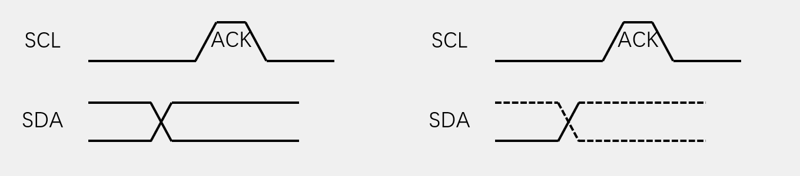
10.1.4 I2C读写时序¶
- 指定地址写
- 对于指定设备（Slave Address），在指定地址（Reg Address）下，写入指定数据（Data）
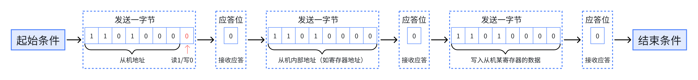
- 当前地址读
- 对于指定设备（Slave Address），在当前地址指针指示的地址下，读取从机数据（Data）
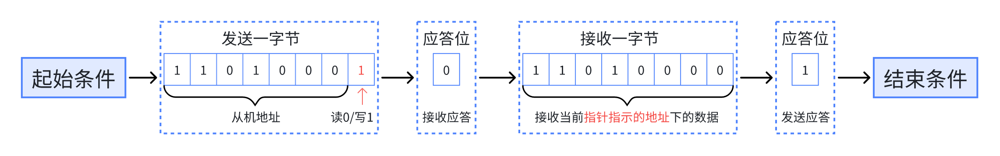
- 指定地址读
- 对于指定设备（Slave Address），在指定地址（Reg Address）下，读取从机数据（Data）
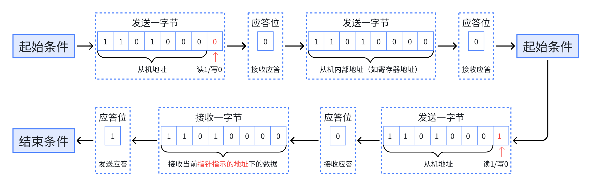
关于“主机发送应答位” 和 “当前地址指针指示的地址”
- **当前地址指针指示的地址 **：发送完一个字节后，指针地址会自增 1 ，而地址指针默认指向 0 位置。
- **主机发送应答位 **：在发送模式下，主机想要结束，先给从机非应答，防止从机争夺SDA控制权无法生成结束条件。
10.2 软件模拟I2C¶
软件模拟的好处就在于使用灵活，可以自定义引脚，减少硬件资源的使用。我使用PB1作为SDA，PB2作为SCL，两个引脚均配置为 开漏输出模式 和 上拉电阻 ，默认高电平（硬件电路讲过）。

新建sw_I2C.c和sw_I2C.h：
sw_I2C.c
#include "swI2C.h"
void delay_us(uint32_t us) {
uint32_t start = SysTick->VAL;
uint32_t ticks = us * (HAL_RCC_GetHCLKFreq() / 1000000); // 计算微秒对应的时钟周期数
while ((start - SysTick->VAL) < ticks) {
if (SysTick->VAL > start) { // 如果发生回绕
start += SysTick->LOAD + 1;
}
}
}
/* 改变SDA电平 */
void SDA_Write(uint8_t BitValue)
{
HAL_GPIO_WritePin(SDA_GPIO_Port, SDA_Pin, (GPIO_PinState) BitValue);
delay_us(10);
}
/* 改变SCL电平 */
void SCL_Write(uint8_t BitValue)
{
HAL_GPIO_WritePin(SCL_GPIO_Port, SCL_Pin, (GPIO_PinState) BitValue);
delay_us(10);
}
/* 读取SDA电平*/
GPIO_PinState SDA_Read(void)
{
GPIO_PinState BitValue;
BitValue = HAL_GPIO_ReadPin(SDA_GPIO_Port, SDA_Pin);
delay_us(10);
return BitValue;
}
/* brief: I2C开始条件,SCL高电平期,SDA从高电平切换到低电平
*
*/
void I2C_Start(void)
{
// 确保SDA为高电平
SDA_Write(1);
// 置SCL为高电平
SCL_Write(1);
// 置SDA为低电平,完成下降沿
SDA_Write(0);
// 置SCL为低电平,为放数据到SDA上做准备
SCL_Write(0);
}
/* brief: I2C终止条件,SCL高电平期间,SDA从低电平切换到高电平
*
*/
void I2C_Stop(void)
{
// 置SDA为低电平
SDA_Write(0);
// 置SCL为低电平
SCL_Write(0);
// 确保SDA为高电平,完成上升沿
SDA_Write(1);
}
/* brief: 发送一个字节,数据位依次放到SDA线上
* 一个字节 8 bit,所以用uint8_t
*/
void I2C_WriteByte(uint8_t Byte)
{
uint8_t i;
for (i=0; i<8; i++)
{
// 写数据到SDA
SDA_Write(Byte & (0x80 >> i));
// 拉高SCL可以让从机读数据
SCL_Write(1);
// 拉低SCL继续发送下一位
SCL_Write(0);
}
}
/* brief: 接收一个字节,在SCL高电平期间读取数据位
* 一个字节 8 bit,所以用uint8_t
*/
uint8_t I2C_ReadByte(void)
{
uint8_t i, Byte=0x00;
// 主机释放SDA
SDA_Write(1);
for (i=0; i<8; i++)
{
// 拉高SCL读数据
SCL_Write(1);
// 高电平的位补 1 ，其余不变
if (SDA_Read() == 1) {Byte = Byte | (0x80 >> i);}
// 拉低SCL继续发送下一位
SCL_Write(0);
}
return Byte;
}
/* brief: 发送应答
* 就是发送 1 位数据
*/
void I2C_WriteAcK(uint8_t Ack)
{
SDA_Write((GPIO_PinState)Ack);
// 拉高SCL可以让从机读数据
SCL_Write(1);
// 拉低SCL继续发送下一位
SCL_Write(0);
}
/* brief: 接收应答
* 就是接收 1 位数据
*/
uint8_t I2C_ReceiveAck(void)
{
uint8_t Ack;
// 主机释放SDA
SDA_Write(1);
// 拉高SCL,读数据
SCL_Write(1);
Ack = SDA_Read();
// 拉低SCL继续发送下一位
SCL_Write(0);
return Ack;
}sw_I2C.h
#ifndef SW_I2C_SWI2C_H
#define SW_I2C_SWI2C_H
//
#include "gpio.h"
void delay_us(uint32_t us);
void SDA_Write(uint8_t BitValue);
void SCL_Write(uint8_t BitValue);
GPIO_PinState SDA_Read(void);
void I2C_Start(void);
void I2C_Stop(void);
void I2C_WriteByte(uint8_t Byte);
uint8_t I2C_ReadByte(void);
void I2C_WriteAcK(uint8_t Ack);
uint8_t I2C_ReceiveAck(void);
#endif //SW_I2C_SWI2C_H
10.3 I2C硬件外设¶
10.3.1 I2C外设简介¶
- STM32内部集成了硬件I2C收发电路，可以由硬件自动执行时钟生成、起始终止条件生成、应答位收发、数据收发等功能，减轻CPU的负担
- 支持多主机模型
- 支持7位/10位地址模式
- 支持不同的通讯速度，标准速度(高达100 kHz)，快速(高达400 kHz)
- 支持DMA
- 兼容SMBus协议
STM32F103C8T6 硬件I2C资源：I2C1、I2C2
10.3.2 I2C框图¶
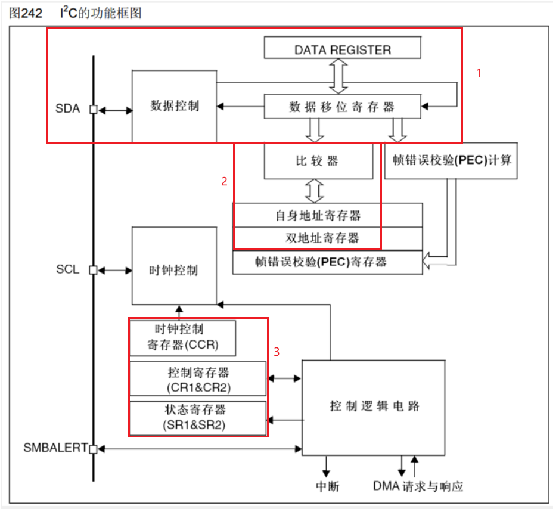
- I2C的数据收发结构，与串口类似可类比理解。
- 比较器、自身地址寄存器和双地址寄存器是用于STM32做从机时，指定STM32的地址，此时将指定地址写入自身地址寄存器即可被主机召唤。
- 三个重要寄存器，知道即可。
10.3.3 I2C基本结构¶
将简单I2C通信用不到的部分删去就剩下如图的结构，其中有几点需要注意：
- I2C的移位时 低位先行 ，这一点与串口通信 相反 。
- 发送数据时，数据寄存器将一位 字节 数据传到数据移位寄存器后，此时数据寄存器为空，移位寄存器非空，会置标志位。
- 接收数据时同理。
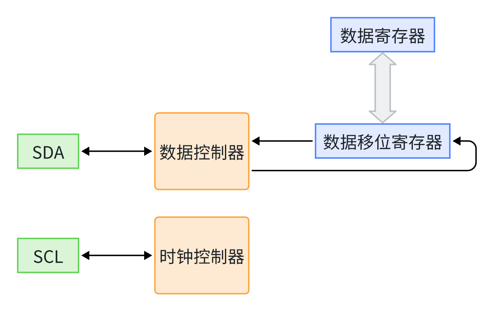
10.3.4 主机收发序列图¶
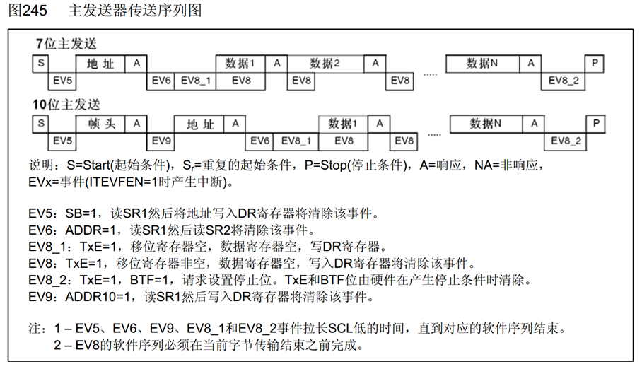
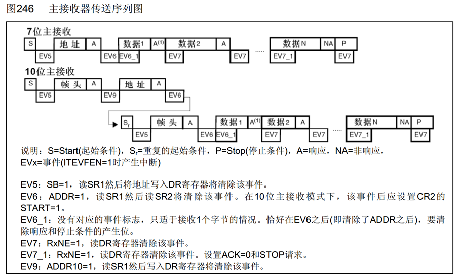
Danger
此序列图应结合STM32手册学习，查看对应的寄存器。